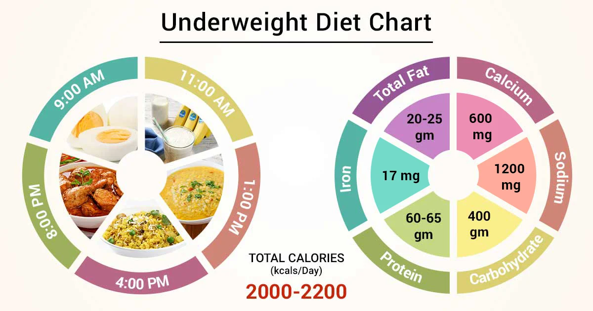
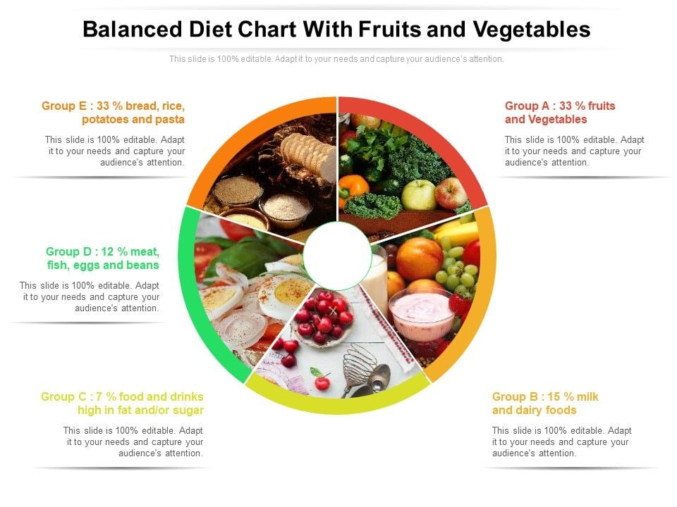
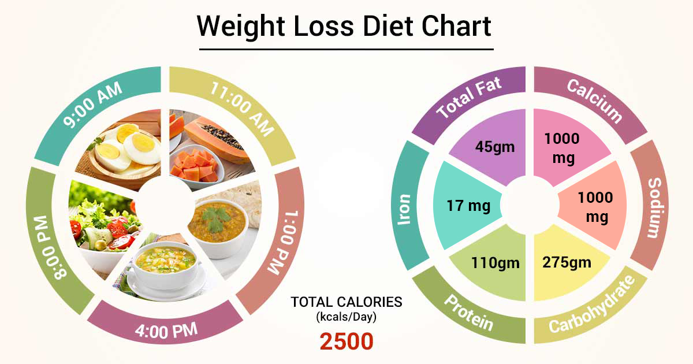
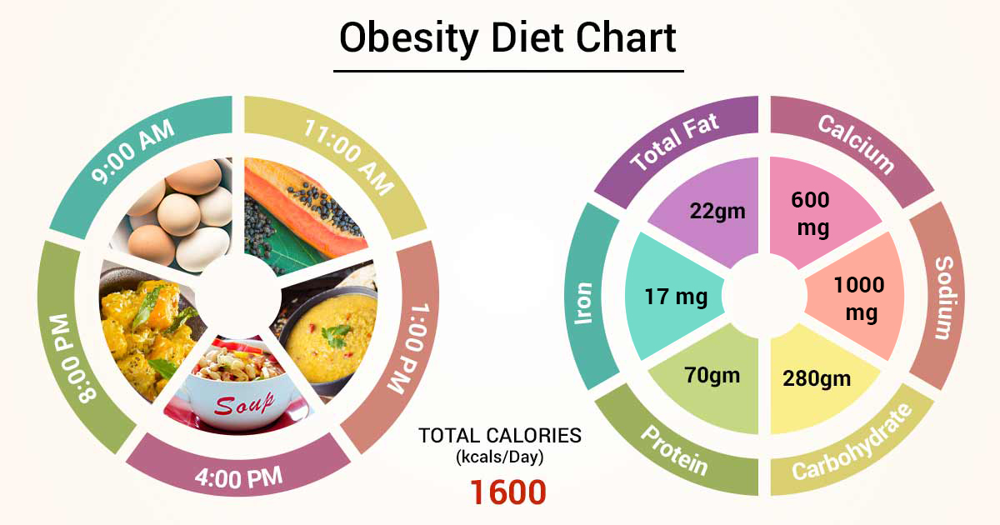

Diets & Exercises
For Underweight (BMI less than 18.5)
Excercises:
- Focus on strength training exercises to build muscle mass.
- Include compound exercises like squats, deadlifts, and bench presses.
- Aim for moderate intensity cardio workouts to improve cardiovascular health without burning too many calories.
Diet:
- Increase calorie intake with nutrient-dense foods such as nuts, seeds, avocados, and healthy oils.
- Incorporate protein-rich foods like lean meats, fish, eggs, legumes, and dairy products to support muscle growth.
- Eat frequent meals and snacks throughout the day to ensure consistent energy intake.

For Normal Weight (BMI 18.5-24.9)
Excercises:
- Engage in a combination of aerobic exercises (e.g., brisk walking, cycling, swimming) and strength training.
- Aim for at least 150 minutes of moderate-intensity aerobic activity per week.
- Include strength training exercises at least two days a week, targeting major muscle groups.
Diet:
- Maintain a balanced diet with a variety of fruits, vegetables, whole grains, lean proteins, and healthy fats.
- Focus on portion control and mindful eating to avoid excessive calorie intake.
- Stay hydrated by drinking plenty of water throughout the day.

For Overweight (BMI 25-29.9)
Excercises:
- Increase the intensity and duration of aerobic exercises to promote weight loss.
- Incorporate high-intensity interval training (HIIT) workouts to boost metabolism and burn calories.
- Continue strength training exercises to preserve lean muscle mass.
Diet:
- Reduce calorie intake by controlling portion sizes and avoiding high-calorie, processed foods.
- Increase consumption of fiber-rich foods like fruits, vegetables, and whole grains to promote satiety.
- Limit intake of sugary beverages and snacks, and opt for healthier alternatives.

For Obese (BMI >= 30)
Excercises:
- Prioritize cardiovascular exercises such as running, cycling, or swimming to burn calories and improve heart health.
- Incorporate strength training exercises to build muscle and boost metabolism.
- Gradually increase exercise intensity and duration as fitness improves.
Diet:
- Adopt a balanced, calorie-controlled diet focusing on whole, unprocessed foods.
- Include plenty of fruits, vegetables, lean proteins, and healthy fats while limiting refined carbohydrates and added sugars.
- Seek support from a registered dietitian or nutritionist for personalized meal planning and guidance.
